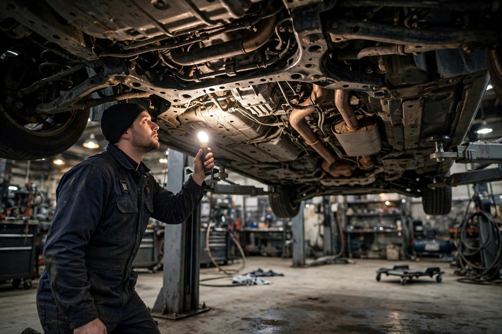

Underbody Restoration & Protection
Specialist vehicle underbody rust removal and long-term corrosion protection. We follow a thorough, documented ten-step process to remove corrosion, prepare metal surfaces and protect them for the long term.

What the treatment covers
- Full vehicle underbody inspections
- Underbody cleaning and preparation
- Laser rust and corrosion removal
- Rust treatment application
- Epoxy primer application
- Underbody protective coatings
- Cavity waxing
- Suspension and chassis component restoration
- Long-term corrosion protection
- Before-and-after photographs and a Certificate of Completion
Doing the job right takes time
A full underbody restoration and protection treatment on a standard passenger car requires a minimum of 4 days. The timeframe varies with the size and condition of the vehicle, the extent of corrosion, the preparation required and the drying and curing times of the coatings. An estimated completion date is provided following the initial inspection, and if additional work or time is required, you will be informed in advance.
Rust removal & protection, step by step
You only get one opportunity to get the preparation right, so every stage is carried out with care and attention to detail.
Documented, not just done
Every customer receives before-and-after photographs of the treatment carried out on their vehicle, along with an individual Certificate of Completion detailing the work and the protective treatments applied.
The certificate can be kept with the vehicle's service history and passed on to future owners, giving future buyers greater confidence in the vehicle's care and maintenance history.
Vehicle Inspection
Every vehicle receives an initial inspection to assess its condition, identify corrosion and determine the most suitable treatment.
Preparation & Access
Where necessary, selected components are removed to allow access to concealed areas, including bumpers, lights, wheel arch liners, underbody panels and protective guards.
Underbody Cleaning Treatment
The underside is treated using specialist cleaning solutions and hot pressure washing to remove road salts, grease, oil, mud and dirt, leaving surfaces ready for preparation.
Heated Drying
Following washing, the vehicle is placed in our heated drying room to ensure the underside is completely dry before further treatment begins.
Preparation & Masking
All components and areas not intended for treatment are securely covered and protected, with particular attention to sensitive components, electrical connections and braking systems.
Laser Rust Removal
Specialist laser cleaning equipment removes rust, corrosion and unwanted surface contaminants from suitable metal surfaces.
Rust Treatment
Areas affected by deeper pitting or residual corrosion are assessed and treated with a suitable rust converter where required, before epoxy coatings.
Professional-Grade Epoxy Coatings
Prepared metal surfaces receive two coats of professional-grade epoxy protection, creating a durable barrier against moisture, road salt and corrosion.
Underbody & Cavity Wax Protection
Specialist protective anti-corrosion wax coatings are applied to suitable underbody areas, seams and internal cavities. Flexible coatings, resistant to road salt and grime, designed not to crack and peel like traditional bitumen underseal.
Reassembly & Final Inspection
Removed components are refitted, followed by a final inspection to ensure all treated areas have been completed.
Start with an inspection
Every job begins with a pre-treatment inspection, and the €50 fee comes off your final invoice if you go ahead.